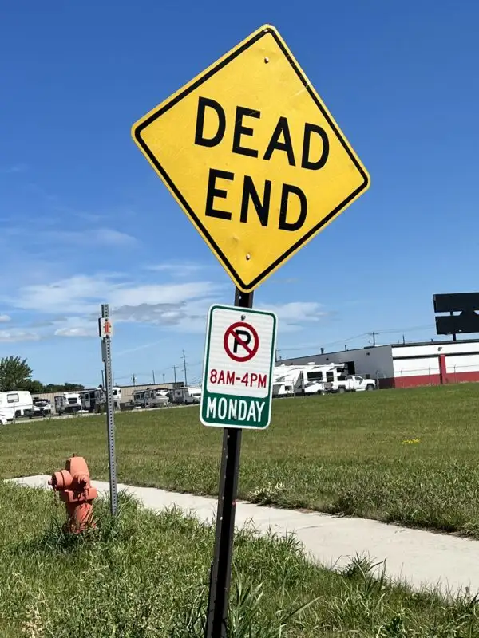

At one of my first visits to our area’s new abortion facility just across the Red River in Moorhead, Minn. at 302 Highway 75 North, I realized I’d forgotten something in my car. Walking back to where it was parked on the lonely street pointing to what seemed the end of nowhere, I was stopped cold by a yellow, rectangular, tilted road sign marked “Dead End.”

Those who installed it couldn’t have known that someday it would represent a nearby “clinic” in which, weekly, the lives of tiny humans end. It was put there simply to let people know there’s no thru street, and that by proceeding, they could end up stuck. The poor sign, fairly innocuous all the preceding years, has taken on a sad new significance, announcing the operations that now mark the air: “Dead End.” Indeed.
A friend who knows a former Moorhead police officer said he told her this section of the city has historically been so sketchy that no cop would traverse the area without backup. I don’t know of all the sordid things that have transpired there, but I do know of dark deeds happening there now on Wednesdays.
But wait, didn’t the Red River Women’s Clinic, the only facility that performed abortions in North Dakota until recently, shut down after Roe vs. Wade was overturned? If so, why are we still worrying about it? Why not celebrate our victory and let Minnesota take over sidewalk advocacy on their turf?
We certainly do celebrate the end of abortions at the Kopelman Building in downtown Fargo. Still, on Aug. 19, many of us North Dakota prayer advocates joined citizens and leaders from Minnesota, and the co-founder of 40 Days for Life National—David Bereit—under a tent in grounds across the street from this new facility, all to garner collective enthusiasm for pro-life efforts, needed more than ever.
It was never just about one state. While we can be proud of pro-life efforts in North Dakota, friends in Minnesota have been joining us on our sidewalk for years. And now, they’re needing us at theirs. We want to empower our friends across the river to take up the charge, but we are the Body of Christ together, and no state boundary, river or otherwise, can change the necessity of working together to effect a culture of life.
Recently, a friend asked, “So, how are things going at the new place?” I wish I had good news to share; that no one is really coming by, and it’ll only be a matter of time before this new place closes. Unfortunately, that’s not the case. Not only are people coming, but we’re more restricted than ever from reaching clients. We have a sidewalk to stand on, but the whole building and parking lot are off limits to us. We can no longer reach out with brochures, and our chances of having meaningful conversations with the abortion-minded are nearly nonexistent.
Maybe we can make eye contact, shout information across the parking lot, flash a sign letting clients know of other ways to meet the challenge of an unplanned pregnancy, or lead them to help afterward. But we have little assurance we’re making a difference.
The good news is that it’s less boisterous. Since we have so little contact with clients or escorts, the friction that seemed so insurmountable just months ago has all but ceased. If anyone is going to change anyone’s mind, it’s really going to have to be by God’s hand and not ours. We have to turn even more to the almighty.
It’s a humbling and challenging time with new rules and new scenarios cropping up that seemed unfathomable even a year ago—like the possibility of Fargo’s Veterans Hospital offering abortions, since federal operations don’t fall under state law.
What hasn’t changed, and will never change, is God’s protection, presence, and providence. On Easter Sunday, he proved that no Dead End lasts forever. So, even as we grieve more lives lost, we must trust the unfolding of his beautiful and glorious plan for the redemption of the world.
[Note: I write about my experiences praying for the end to abortion at the sidewalk abutting the Red River Valley’s lone abortion facility for New Earth magazine — the official news publication of the Fargo Diocese. I hope you find “Sidewalk Stories” helpful in understanding the truth about abortion and how it plays out tragically in our corner of the world. The preceding ran in New Earth’s October 2022 issue.]